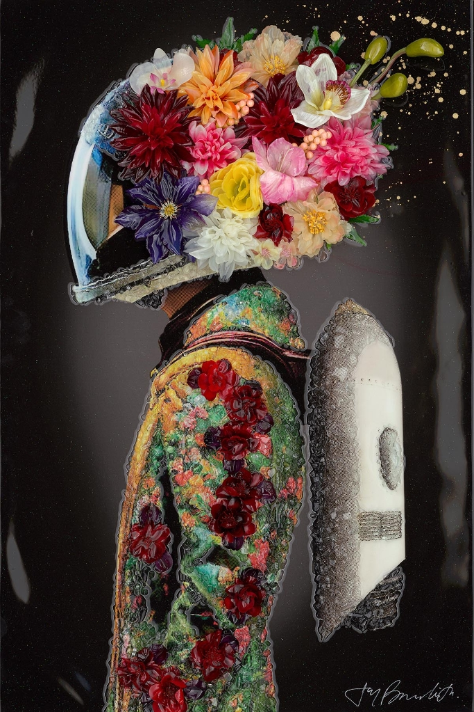

The Rocketeer

Description: In “The Rocketeer,” contemporary artist Jay Bonadio revisits the golden age of aviation and pulp fiction with a surrealist twist. This mixed-media masterpiece reimagines the iconic Art Deco hero not as a man of steel and leather, but as a vessel for organic beauty.
Replacing the character’s signature streamlined helmet is an effervescent explosion of flora. Detailed orchids, dahlias, and chrysanthemums bloom where the pilot’s visage would be, creating a striking juxtaposition between the mechanical nature of the jetpack and the delicate, timeless elegance of nature.
True to Bonadio’s reputation as “The Shattered Glass Artist,” the piece is a triumph of texture. The Rocketeer’s jacket and equipment are rendered using his signature crushed glass and resin technique. This application catches the light from every angle, giving the artwork a three-dimensional, gem-like quality that stands in bold contrast against the deep, high-gloss black background. The result is a work that feels both retro-futuristic and distinctly modern—a visual dialogue between hard edges and soft petals, nostalgia and innovation.
Artwork Details:
- Medium: Mixed Media, Crushed Glass, and Resin on Board
- Style: Pop Art / Contemporary Surrealism
- Key Elements: High-relief texture, floral motif, crushed glass detailing
- Signature: Hand-signed by the artist (Bottom Right)
- Dimensions
- 36 in x 24 in
- Reg. / Lot No.
- R05665.0001